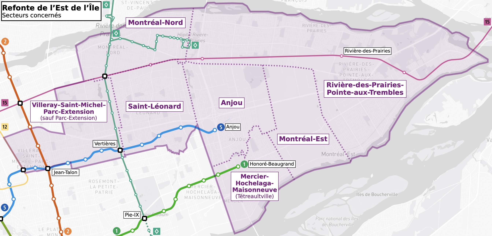
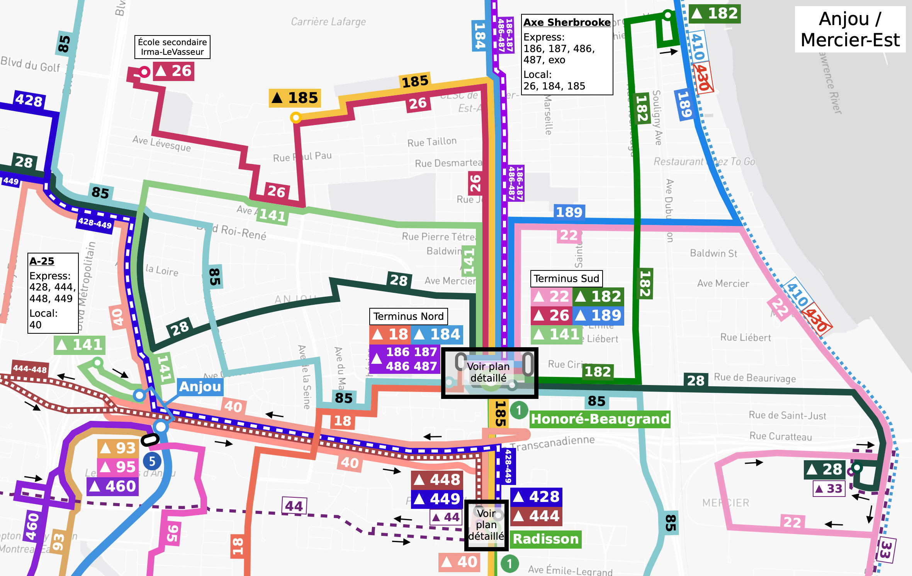
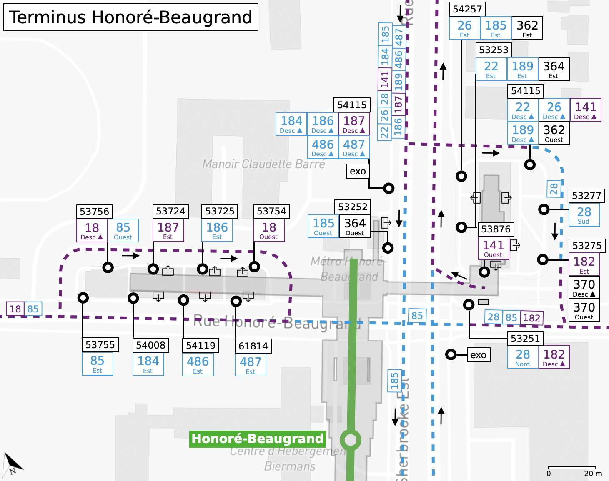
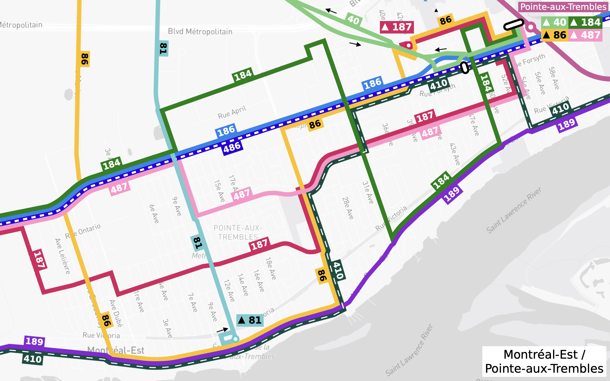
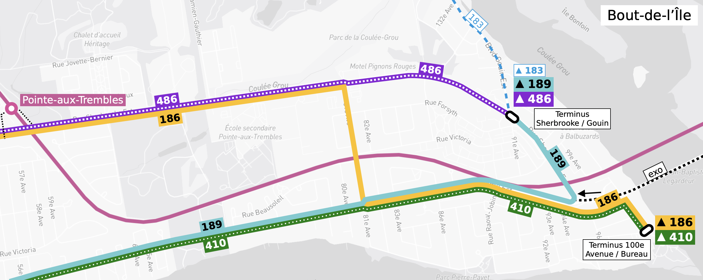
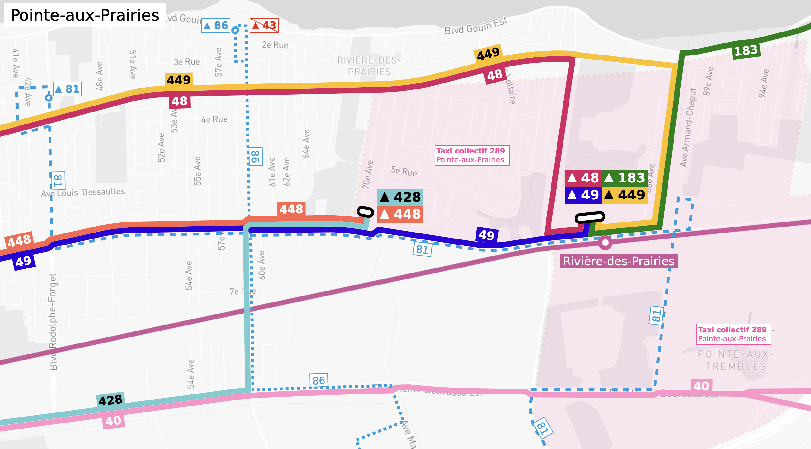

← Retour à la page précédente
Ce site n'est pas affilié à la Société de transport de Montréal (STM) et les informations
présentées ci-dessous ne servent qu'à des fins de suggestion. Veuillez utiliser le site web
officiel de la STM pour planifier votre trajet.
Refonte - Est de l'Île
Territoire concernée par la refonte
Portrait du secteur
Résumé des interventions proposées
Territoire concernée par la refonte
- Villeray–Saint-Michel–Parc-Extension (sauf Parc-Extension ouest)
- Saint-Léonard
- Montréal-Nord
- Anjou
- Mercier-Hochelaga-Maisonneuve (Tétreaultville)
- Montréal-Est
- Rivière-des-Prairies–Pointe-aux-Trembles

Portrait du secteur
Les secteurs d'analyse sont approximatifs et ne correspondent pas nécessairement aux districts.
Plan sommaire des interventions
Les sections ci-dessous explique en détail certaines interventions majeures énumérées ci-dessus.
Secteur Mercier-Est
Texte ici


Secteur Montréal-Est / Pointe-aux-Trembles
Texte ici

Secteur Bout-de-l'Île
Texte ici

Secteur Pointe-aux-Prairies / Gare Rivière-des-Prairies
Texte ici

Résumé des interventions proposées
| Ligne |
Type d'intervention |
Intervention(s) suggérée(s) [modifications majeures de trajet seulement] |
Note(s) |
| 10 • De Lorimier |
Modification de trajet |
- Déplacement du terminus à Crémazie / Fabre pour un service bi-directionnel sur ce tronçon.
- Optimisation du parcours à l'extrémité sud (voir refonte Plateau/Ville-Marie nord).
|
|
| 13 • Christophe-Colomb |
Maintien du service |
- Aucune modification de trajet proposée dans la zone de refonte. Voir suggestions pour refonte de l'Ouest sur certains changements proposés.
|
|